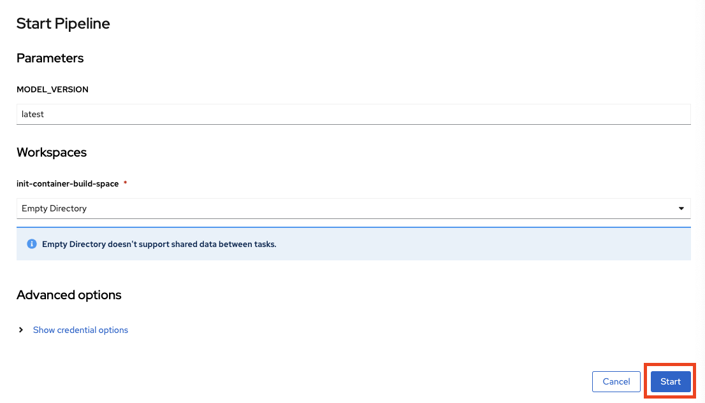
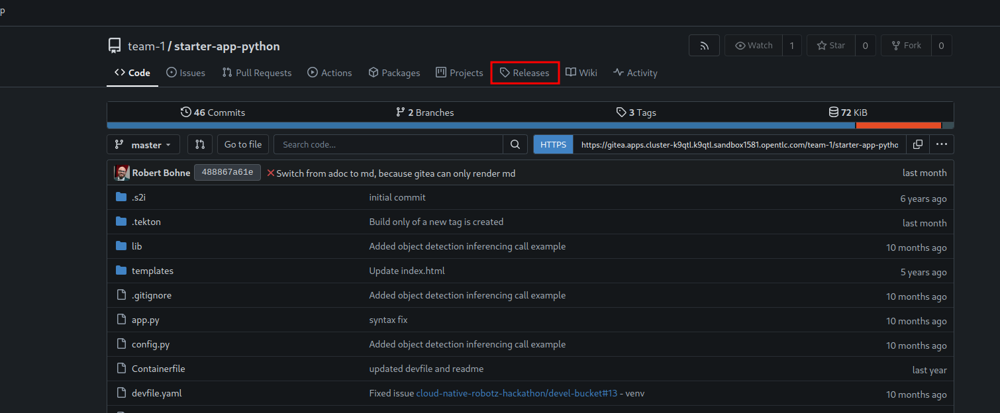

Edge DevOps
Testing our solution on OpenShift is fun but what we really want is an autonmous robot that can think for itself and find our fedora in the most disconnected of places.
As you read in the last chapter at the "feature freeze" you will have to provide your solution assets in the form of container images. It is time to move these onto the robot itself.
Build a Container Image of the Object Detection Model
Once we are finished with tuning our object detection model we will package it into a container image to de deployed on the robot.
An OpenShift pipeline based on Tekton has been prepared for you
-
Login into the OpenShift Console with username: team-1 and password : secret-password
-
Go to Pipelines
-
Click on Actions → Start

-
Click on Start to start the pipeline

Build a Container Image of the Application
When done with the app we will package it in a Container Image as well. A matching pipeline has been added to your template app repository. This pipeline is triggered by the creation of a Tag in Gitea. So once you are ready, all you need to do is create a Tag and the Pipeline will build and push the Image to the local OpenShift Registry.
-
Login into Gitea with
-
username: team-1
-
password : secret-password
-
-
Click on Releases
 -
Click on New Release
-
Enter a Tag name such as
Final Version -
Click on the butto Create Tag Only
Now you can go back to the OpenShift Console and click on Pipelines in the menu on the left. Make sure you are in the Project team-1-dev. You should see you Pipeline running.
Deploy you Images to Robot with GitOps
Now that we have the images we can deploy them to the robot. Since the robots are running Microshift (a lightweight version of OpenShift) we can use consistent tooling to automate our Deployment. We will use OpenShift GitOps based on ArgoCD for this.
A OpenShift GitOps project has already been setup that listens to changes of a configuration repository. The microshift of your robot as been added as manged cluster so any change in the repo will be rolled out diretcly to your robot.
Have a look at the Git repo : https://gitea.apps.example.com/team-1/robot-gitops
-
The object detection image needs to be set here:
-
The app image needs to be set here:
| In real world projects, you would use a tool such as Kustomize to add modification layer without changing the actual deployment.yaml files |
Once you commit the changes OpenShift GitOps will start to work on the deployment. Keep an eye on the ArgoCD Console shown by facilitators.